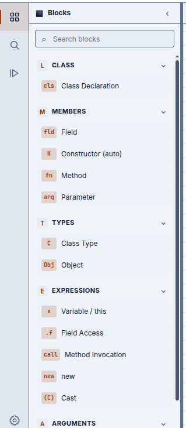

Thirteen blocks, five categories
The toolbox is an exact match to classic FJ — not a superset with the extra bits trimmed in the UI, but thirteen blocks because the grammar has thirteen productions. Nothing here exists for convenience.
The toolbox

| Category | Blocks |
|---|---|
| Class | fj_class — class C extends D { fields; ctor; methods
} |
| Members | fj_field (C f) · fj_ctor
(derived) · fj_method (C0 m(params){ return e; })
· fj_param (C x) |
| Types | fj_type_class (a class name) · fj_type_object
(Object, the root) |
| Expressions | fj_var (variable, including this) ·
fj_field_access (e.f) · fj_invk
(e.m(ē)) · fj_new (new
C(ē)) · fj_cast ((C)e) |
| Arguments | fj_arg — one cons-cell of an actual-argument list |
A few of these are worth calling out because their names do not quite give them away:
fj_varis one block, one production, for every variable reference —thisincluded. FJ treatsthisas an ordinary variable bound implicitly at the start of every method body, so there is no separatethisblock the way some designs would add one.fj_type_objectisObject, FJ's root type (“Top”). It is the type every class implicitly extends and every upcast can target.fj_argstacks underfj_newandfj_invk, one block per argument, rather than either call having a fixed arity or a Blockly “mutator” gear icon. The same stacking discipline applies tofj_field/fj_param/fj_method, and it is not incidental — see the note on cons-lists below.
Confirmed omissions, all deliberate: no interfaces, no assignment or mutation, no null,
no primitive types beyond the implicit Object root, no generics, no overloading. FJ's
entire research value is being small enough to prove things about, and every one of these is a
feature that would make the proofs bigger without changing what the calculus is for.
The fixed constructor
fj_ctor is not a block you fill in. It has no sockets at all — it reads
constructor (auto) on the canvas and is synthesized directly from the class's own field
list plus its superclass's fields, in the order FJ's typing rules require.
FJ's class-formation rule says the constructor for C is fully determined by
fields(C) — there is exactly one legal constructor per field list, always.
If fj_ctor were an ordinary editable block, two structurally different block
trees could denote the same program (the same fields, written in a different constructor
shape), which would break a bijection the project states and tests as a theorem: every
block tree corresponds to exactly one AST, and vice versa. Making the constructor derived
rather than authored is what keeps that bijection true rather than aspirational. See
the round-trip chapter for the proof itself.
The same reasoning is why field, parameter and argument lists are fixed, stackable cons-cells
rather than a variable-arity mutator block: per-position subtype checking (each
C₀ against its matching D₀) and the bijection above both
need the list's shape to be unambiguous, and a mutator's internal state is exactly the kind of
extra bookkeeping that would make two equivalent programs look different as blocks.
The BFJ-Thrasos renderer
BFJ uses a custom Blockly renderer called BFJ-Thrasos. It subclasses Blockly's Thrasos renderer, built the same way as B-MJ's BMJ-Thrasos — reimplemented in the same style for FJ's grammar, not shared code — and gives each FJ non-terminal a distinct connector shape, not just a colour.
Blockly's check-string metadata still does the actual enforcing: you cannot plug a
Type into an Expression socket regardless of what things look like.
What the shapes add is that a mismatch is visible before you try the
connection, not discovered by a rejected drag.
BMJ-Thrasos changes connector shapes so MiniJava's ten non-terminals are visible; B-Lambda's Tude changes block geometry instead, so a λ-term reads as nested text. BFJ-Thrasos is doing the same thing as BMJ-Thrasos — grammar-aware connectors, independently built — for a much smaller grammar: FJ has far fewer non-terminals than MiniJava, so BFJ-Thrasos needs fewer shape families than BMJ-Thrasos's ten.
Connector shapes
Two orientations, split by what FJ actually needs a socket for: a single value in a slot, or a sequence of things stacked one after another.
Horizontal — value sockets
| Shape | Non-terminal | Reads as |
|---|---|---|
| Slim trapezoid | Type |
Any type position |
| Wide, welcoming curve | Object / ⟨Object⟩ |
The root type — it accepts anything, and the curve says so |
| Blocky triangular peak | FJCtor |
The constructor slot — deliberately spiky, to signal “derived, not normal” |
Vertical — stacking connections
| Shape | Non-terminal | Reads as |
|---|---|---|
| Narrow diamond zigzag | FJField |
A field, stacked under the class |
| Tall, deep chevron | FJMethod |
A method, stacked under the field list |
| Smooth rounded arch | FJParam |
A formal parameter, stacked in a method's parameter list |
| Repeated saw-tooth | FJArg |
An actual argument, stacked in a call or new |
The saw-tooth on FJArg is deliberately unlike the arch on FJParam:
arguments and parameters are the two cons-lists in the grammar that are easiest to confuse at a
glance, since a call site and a declaration can look almost identical once both are full of
fj_var blocks.